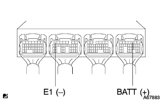
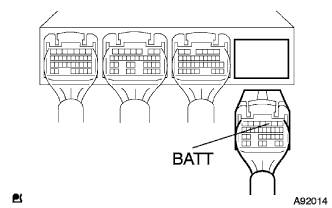
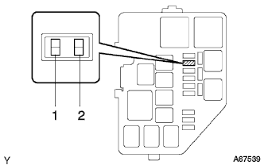

EFI system ECU backup power supply system |
| Step 1 | Engine Control Company Single Inspection |
|  |
The voltage between the connector of the engine control compilation is measured using SST (Toyota Electrical Tester).(The terminal array isreference)
| Measurement terminal (terminal name) | Reference value |
| D3 (BATT) ← → B7 (E1) | 9-14V |
|
| ||||
| NG | |
| Step 2 | Hughes inspection (E.F.I.) |
 |
Remove the AM2 fuse from the engine room J/B, and use SST (Toyota Electrical Tester) to check for the same communication.
|
| ||||
| OK | |
| Step 3 | Wire harness or connector inspection |
Cut the battery minor Star Minal.
|  |
Cut the connector D of the engine controlled compilation.
|  |
Using a Toyota Electrical Tester, the connector side connector of the engine control compilation is checked between fuse and short circuit between the fuse.(The terminal array isreference)
| Measurement terminal (terminal name) Engine Control Company ← → E.F.I. Hughes | standard |
| D3 (BATT) ← → 3 terminals | There is an conductor |
|
| ||||
| OK | ||
| ||